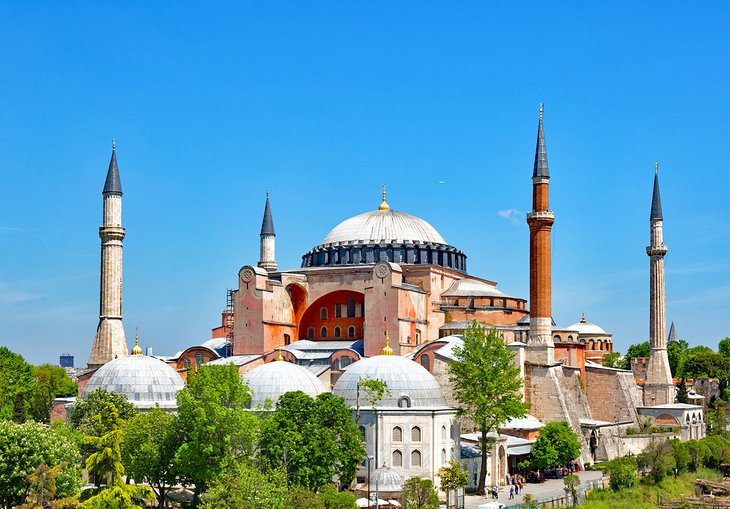

Turkey
1. Hagia Sophia (Aya Sofya) Mosque
Renowned as one of the most beautiful buildings in the world, the spellbinding Byzantine glory of the Hagia Sophia Mosque (Aya Sofya) is not only one of the top things to do in Istanbul, but also in Turkey. Built by the Byzantine Emperor Justinian in 537 CE, it is renowned as the Byzantine Empire's greatest architectural achievement and has remained the world's largest church for 1,000 years. The staggering bulk of its exterior is rimmed by the delicate minarets added after the Ottoman conquest, while the sumptuous and cavernous frescoed interior is a grand reminder of old Constantinople's might and power. This famed monument is a must-do for every tourist visiting the country.
2. Ephesus
Not to be missed, the mighty ruin of Ephesus is a city of colossal monuments and marble-columned roads. One of the most complete, still-standing famed cities of antiquity in the Mediterranean region, this is the place to experience what life must have been like during the golden age of the Roman Empire. The city's history dates back to the 10th century BCE, but the major monuments you see today all date from its Roman era when it was a thriving commercial center. In particular, the Library of Celsus, the complex of frescoed terraced houses, and the Great Theater all point to the wealth and importance of Ephesus during the Roman period. A sightseeing trip here will take at least half a day to cover the major highlights and longer, if you really want to explore, so make sure you plan your visit so you don't feel rushed.

3. Cappadocia
The surreal, swooping rock valleys of Cappadocia are every photographer's dream. Cliff ridges and hill crests are home to rippling panoramas of wave-like rock or wacky-shaped pinnacles that have been formed by millennia of wind and water action. And if you don't feel like hiking for the views, this is one of the world's top destinations to take a hot-air balloon ride. Nestled in this unique lunar-like landscape are the frescoed rock-cut churches and cave-cut architecture of the Byzantine Era, when this area was home to monastic Christian communities. In particular, the multiple cave-churches of Göreme Open-Air Museum and Ihlara Valley are home to some of the best examples of surviving mid-Byzantine-era religious art in the world. Cappadocia's villages, half hewn into the hillsides, where travelers base themselves to explore the surrounding countryside, are also an attraction in themselves, with their boutique hotels that allow you to bed down in a cave with full contemporary comforts.

4. Topkapı Palace
Sumptuous beyond belief, Istanbul's Topkapı Palace takes you into the fantastical, opulent world of the sultans. It was from here, during the 15th and 16th centuries, that the sultans of the Ottoman era carved out an empire that would extend up into Europe and down through the Middle East and into Africa. The interiors, with their decadently exuberant tiling and lavish jeweled decor, are an unforgettable peek into the Ottoman's power base. In particular, don't miss the Imperial Council building, where the empire's business was conducted by the Grand Vizier; the arms collection displayed in the Imperial Treasury; the world-class collection of miniature paintings; and the dazzling Harem rooms, which were designed by the famed Ottoman architect Sinan. The surrounding public gardens were once the sole domain of the Royal Court but are now open to the public and provide a tranquil, green respite from the city streets.

5. Pamukkale
One of Turkey's most famous natural wonders, the pure white travertine terraces of Pamukkale ("Cotton Castle" in English) cascade down the slope looking like an out-of-place snowfield amid the green landscape. Although the travertines are themselves a highlight of a Turkey trip, the vast and rambling ruins of Greco-Roman Hierapolis, an ancient spa town, lie scattered across the summit of this calcite hill. After exploring the ancient theater, with its views across the countryside, and the remnants of the city's agora, gymnasium, necropolis, and grand gates, you can swim in the mineral-rich waters which made this ancient spa town famous, in the antique pool. Afterwards, walk down the travertine hill, wading through the pools of water in the upper terraces, to the small modern village of Pamukkale below. For the best photographs, come at dusk when the travertines glow as the sun sinks below the horizon.